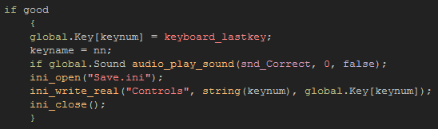
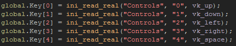
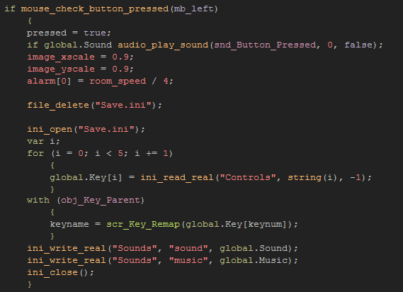

Tutorial
Page 6 of 11
Reset To Default
We are going to now permit the user to remap keys that will be used in our "game" and store those keys to the ini file for future use. To make things simpler, the tutorial game has used a parent button to
control everything, so open up the object called obj_Key_Parent and study the code so that you can see how it works and what is going to need to be done.
Basically what it does is detect a mouse press, then when one is detected it waits for a keypress. When a key is pressed, it is then checked (via the script scr_Key_Remap) to see if it is a valid key for the
game or not and the global variable that should represent that key is set. If you run the game and test each button you can see how it works, but if you exit the game and run it again, you will see that your choices
will not be saved.
To save the individual keys you need to modify the alarm[0] code block, so scroll down until you find the appropriate section of code and change it to look like this:

What are we saving here? Well, in each of the "child" buttons, we have assigned a number to the "keynum" variable to denote a specific key. This number is then used to set the global array to the key that was
pressed by the user when they clicked the button. We then open the ini file and save the key to the corresponding section, again using the keynum variable as the "key" and the numeric value of the chosen player
key as the "value" to be written. Finally, as usual, we close the ini file.
That's all quite straightforward and fairly obvious. But what about loading the keys? For that we need to open up the scr_Init_Globals and add in these lines of code (between the ini_open() and
ini_close() functions):

By now you should be able understand what that code does without any further explanations, so let's move on and look at how we can reset the controls at the press of a button too.
The obvious way to do this would be to simply write the default values to the ini file again, and so over-write any changes that the player may have made. For this example, that would be quite an adequate
solution, but if your game has many options or has a complex amount of data to reset, you will want something simpler and more practical, which means we can make use of the separation between the "bundle"
save file and the "local" save file.
As mentioned on page 2 of this tutorial, when you have an included file in GameMaker:Studio this is never written too, but rather it is copied over to the local storage area, and the copy
is written to. This means that when we create the included file for our game, we can fill it with the default values that we want to use on startup, and they will only be changed when the player modifies something,
thus saving a user-specific copy in the games local storage.
Now, if you remove that file from local storage, what happens? Well, your game will look for it, and when it can't be found, it will return to the original file that is included in the game bundle,
effectively resetting any changes that may have been made. So this is what we are going to do in out test "game" too!
Open up the object obj_Key_Reset and go into the step event then make sure that the mouse_check_button_pressed() code block looks like this:

As you can see the first thing we do here is delete the ini file using the file_delete function. Remember! This will only remove the version from local storage, not the original version that comes with the
game bundle! After that we open the ini file again (from the game bundle) and read into the global key array the default values that it holds into the game. Next we run the script for the names to set the buttons to
show the correct name for the default values that we have loaded, and finally we write the current values for the music and sound as we do not want to reset them (this will also re-create the ini file in local storage
again).
Test the game again, and see that your changes to the keys are saved by changing them, quitting the game, and restarting again.
Click on the Next button to go to the next page of the tutorial.